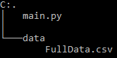

Python: Rank Fifa Players with Random Forest Classifier
Tweet
Hello World!
Today we are going to create a simple classification model by using a random forest classifier
We are gonna need the dataset for this tutorial. You can get it from
here.
If you don't know it, Kaggle is an awesome website where you can find all sort of open datasets for datascience
and you can also compete with other users to earn prizes.
The project folder will be like this:

from sklearn.ensemble import RandomForestClassifier
import pandas as pd
import numpy as np\n
# Let's open the dataset
players = pd.read_csv("data/Fulldata.csv")
The first thing to do is to import pandas and numpy and to open the dataset
as a pandas DataFrame. Don't worry if you have never used a dataframe before,
we are going to take a look at how it works.
# To check first 5 rows of the dataset
players.head()
# To check some numeric informations about a column
players.loc[:,'Rating'].describe()
# Get column names
list(players)
# Selection by label
players.loc[:,['Name','Rating']]
# Selection by index
players.iloc[:,[0,4]]
These are only a few of the many functions included in Pandas. I really suggest
you to check it out.Now we can go back to our program:
# Add a column that tells us if it's Training Data or not
players['is_train'] = np.random.uniform(0, 1, len(players)) <= .75\n
# Divide between training and testing data
train, test = players[players['is_train'] == True],players[players['is_train'] == False]\n
# We choose the columns with player stats
features = players.columns[17:53]
# Split into Training X(stats) and Y(rating) data
X = train[features]
Y = train.loc[:,'Rating']
In the first part of the code we add a column to tell us if it's train data or not
by using a pandas function which creates a series of number with an uniform distribution.
Then we divide our dataframe into train and test.After this we need to choose which columns we are going to consider to train the model. We are going to use all the columns which contains player stats.
Then we split the training data into Features and Result.
# Initialize the Classifier and train it
clf = RandomForestClassifier(n_jobs=4)
clf.fit(X, Y)\n
# Get the predictions
preds = clf.predict(test[features])
We can now initialize the classifier and get the predictions.
# Create an output dataframe
out = test.loc[:,['Name','Rating']]
out['prediction'] = preds
out['diff']=out.loc[:,'Rating']-out.loc[:,'prediction']
# Let's print mean difference between predicted and actual
print('Mean difference: ',out['diff'].mean())
# And the number of exact matches
print('Exact Matches:',len(out[out['diff']==0]))
With this last step we are going to create an output dataframe from test.
Then we add the column prediction and diff(difference between predicted value and rating)
and finally we print the mean difference and the number of exact matches.Your output should be similar to this:
Mean difference: 0.5449783648371669
Exact Matches: 821
We can also check the content of the output dataframe.
#Let's print the players with rating and prediction
print(out.loc[:,['Name','Rating','prediction','diff']])
# OUTPUT
# Name Rating prediction diff
#0 Cristiano Ronaldo 94 88 6
#3 Luis Suárez 92 88 4
#4 Manuel Neuer 92 81 11
#8 Zlatan Ibrahimović 90 85 5
#10 Jérôme Boateng 89 85 4
We can improve our score by using another algorithm, but i think it's enough
for today. You can download the code of this post hereHave fun experimenting with other datasets!
Comments
Comments powered by Disqus